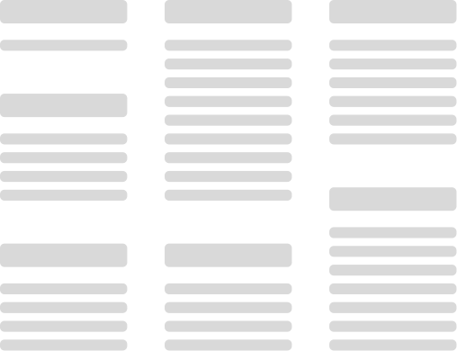
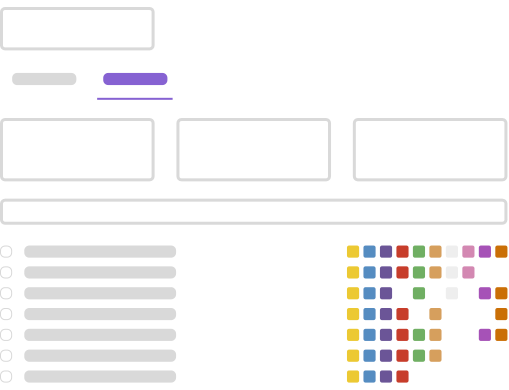
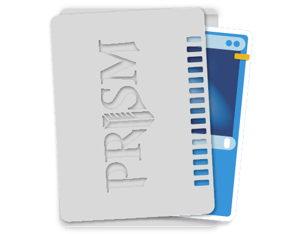

Own one copy of each card. Mark its sleeve with a stripe for every deck the card belongs to. Fan, pull, play.
One Box Instead of Five
Drag the divider. Five decks that each needed their own copies become one box of marked sleeves.


How It Works

Import Your Decks
Paste a deck URL from Moxfield or Archidekt. You can also type a list by hand. PRISM gives each deck one color and one slot. A single PRISM holds up to 48 decks, or 96 with dot splits.

Find Your Pool Copies
A copy that two or more decks use is Pool. PRISM finds every one of them, so one Sol Ring is all you need.

Mark Your Sleeves
Use paint pens and the Spirit Guide alignment tool to mark the visible edge of each sleeve. Mark the Perfect Fit inner, never the outer sleeve. Double-sleeving is required. The outer sleeve protects the mark.
Features
Paste a deck URL, or type a list in standard MTGO format. PRISM parses the list, and organizes the cards.
Each deck gets one color and one fixed slot. Fan your cards, find the stripes, and pull the deck.
See how much each pair of decks shares. Find the decks with no overlap, which is useful when someone borrows a deck. Or use the overlaps to fit more decks into fewer cards.
Run one commander shell with several themes. Mark the copies every variant uses once, then mark each variant on its own. PRISM tracks the shell and its variants as one group.
Add a new deck later and PRISM shows what changed. You mark only the new cards. You do not re-mark hundreds of sleeves.
Use the web app here, or download your marking guide as CSV, JSON, or a printable reference.
PRISM saves your work in your browser. Return at any time to update or export it. Login to sync across multiple devices.
A single PRISM holds up to 48 decks, or 96 with dot splits. Each deck gets its own slot. For a larger collection, create more than one PRISM.
Your collection, organized.
Stop buying duplicates. Share one copy across every deck.
Frequently Asked Questions
Use fine-tip acrylic paint pens. They work on most sleeves. PRISM defaults to colors that match standard paint pen sets. The Tools page lists specific products.
Sell them. After you mark your sleeves, you need only one copy of each card. Your duplicates become trade fodder or cash. Many players cover the cost of their marking supplies this way.
PRISM is local-first. Your decks and marks stay in your browser and work without an account. If you create an account, PRISM also syncs your data to our database so you can use it across devices. We use aggregate analytics that do not identify you. The Privacy Policy has the details. You can export your data as JSON at any time.
Yes. On each deck card, select Move to open the slot picker. To reorder several decks at once, use the dropdown list on the Export tab. Group your decks by color identity, or put your most-played decks in the positions that are easiest to see.
Yes. MTR 3.12 defines a card as marked if the marking lets a player identify it without seeing its face. Sleeve edge marks add no noticeable thickness and do not change the card's profile in the deck. If you must look from a specific angle to see the mark, the card is not marked under the rule.